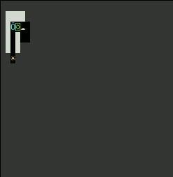
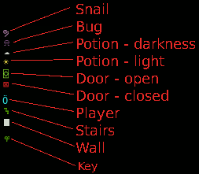

Haskell roguelike - ASCII terminal frontend
ASCII terminal GUI frontend
Just for fun, here is a horribly quick and dirty ASCII terminal frontend to show how you could create different frontends for the same engine. I’m not going to spend much time explaining this code. Hopefully it is enough to give you some ideas.
Yuck
Here are some of the shortcuts
- The code makes you press enter to start to give the server time to listen on the port
- No support for layers (not a big deal for an ASCII version I think)
- On error I just throw exceptions
- No attempt to make anything pure, its IO all the way
- The keyboard handling config is ignored, I’ve hard-coded support for up/down/left/right only
- No double buffering / diffing etc, so the terminal flashes on each move
- It would be better not to use websockets, the code may as well communicate directly in process
- Untested on windows
It is still pretty interesting to see different frontends though, so I’ve decided to publish this anyway despite the limitations.
 
Code
Startup
21_console/app/Main.hs (16 to 23)
main :: IO ()
main = do
map01 <- Txt.readFile "worlds/simple.csv"
map02 <- Txt.readFile "worlds/level02.csv"
void . forkIO $ GE.runGame (getLevel map01 map02)
putText "Press enter to start the GUI"
void Txt.getLine
Con.runGuirunGameis run in its own threadrunGuiis called after the user presses enter. This gives the server time to startup
Dependencies
- network, websockets, wai, warp - same as the server, for web socket and related functionality
- terminal-size - allows us to get the terminal size on windows and linux
- ansi-terminal - basic terminal functionality e.g. cursor movement, color selection
runGui
21_console/src/Gui/ConsoleGui.hs (41 to 53)
runGui :: IO ()
runGui = do
IO.hSetEcho stdin False
IO.hSetBuffering stdin IO.NoBuffering
IO.hSetBuffering stdout IO.NoBuffering
Sock.withSocketsDo $ WS.runClient "localhost" 61492 "/" app
where
app :: WS.Connection -> IO ()
app conn = do
(x, y) <- getSize
runConnection conn x y - Disable echo so that reading a character wont write to the terminal.
- Disable buffering to make output be shown immediately.
- Start a web socket client
- Call runConnection
runConnection
21_console/src/Gui/ConsoleGui.hs (58 to 69)
runConnection :: WS.Connection -> Int -> Int -> IO ()
runConnection conn x y = do
sendCommand conn $ "init|" <> show x <> "|" <> show y <> ""
void $ forkIO (runKeys conn)
void loop
close conn
where
loop = do
cmd <- receiveCommand conn
handleCommand conn cmd
loop- Send the init command
- Start runKeys to listen for key presses in its own thread
- loop to receive commands and pass them to handleCommand
Keys
Key presses are detected using code from this answer on stack overflow, mapped to one of the rogue commands and sent to the backend.
21_console/src/Gui/ConsoleGui.hs (73 to 99)
runKeys :: WS.Connection -> IO ()
runKeys conn = do
key <- getKey >>= \case
"k" -> pure "Move:up"
"\ESC[A" -> pure "Move:up"
"j" -> pure "Move:down"
"\ESC[B" -> pure "Move:down"
"l" -> pure "Move:right"
"\ESC[C" -> pure "Move:right"
"h" -> pure "Move:left"
"\ESC[D" -> pure "Move:left"
_ -> pure ""
sendCommand conn $ "key|" <> key
runKeys conn
-- | https://stackoverflow.com/questions/23068218/haskell-read-raw-keyboard-input
getKey :: IO [Char]
getKey = reverse <$> getKey' ""
where getKey' chars = do
char <- IO.getChar
more <- IO.hReady stdin
(if more then getKey' else return) (char:chars)handleCommand
The JSON has a common header with a cmd property. CommandWrapper is used to read this and then call the appropriate handler (where implemented).
21_console/src/Gui/ConsoleGui.hs (104 to 124)
handleCommand :: WS.Connection -> Text -> IO ()
handleCommand conn cmd' =
case Ae.eitherDecode (BSL.fromStrict . TxtE.encodeUtf8 $ cmd') :: Either [Char] CommandWrapper of
Left e -> throwString e
Right cmd ->
case cmd of
CommandWrapper "log" -> pass
CommandWrapper "error" -> pass
CommandWrapper "config" -> handleConfig conn cmd'
CommandWrapper "draw" -> handleDraw conn cmd'
_ -> throwString . Txt.unpack $ "Unknown command: " <> cmd'
handleConfig :: WS.Connection -> Text -> IO ()
handleConfig conn cmd' =
case Ae.eitherDecode (BSL.fromStrict . TxtE.encodeUtf8 $ cmd') :: Either [Char] GC.UiConfig of
Left e -> throwString e
Right _cmd -> do
(w,h) <- getSize
sendCommand conn $ "redraw|" <> show w <> "|" <> show h
passDrawing
The drawing logic is similar to the JavaScript drawing logic, except that there are no layers.
- The layers are combined with Map.unions with the top layer “hiding” any lower layer.
- A blank background is drawn
- Each tile is drawn with the appropriate ANSI attributes (colour)
21_console/src/Gui/ConsoleGui.hs (129 to 157)
handleDraw :: WS.Connection -> Text -> IO ()
handleDraw _conn cmd' =
case Ae.eitherDecode (BSL.fromStrict . TxtE.encodeUtf8 $ cmd') :: Either [Char] GC.UiDrawCommand of
Left e -> throwString e
Right cmd -> do
(width, height) <- getSize
let l1 = (\(x, y, i) -> ((x, y), i)) <<$>> GC.drMapData cmd
let layers = Map.unions . reverse $ Map.fromList <$> l1
A.setSGR [A.Reset]
A.clearScreen
A.hideCursor
A.setCursorPosition 0 0
let (t, s) = tileFromId 4113
let blankLine = Txt.replicate width t
A.setSGR s
traverse_ putText $ replicate height blankLine
traverse_ drawTile $ Map.toList layers
A.setSGR [A.Reset]
where
drawTile :: ((Int, Int), Int) -> IO ()
drawTile ((x, y), tid) = do
A.setCursorPosition y x
let (t, s) = tileFromId tid
A.setSGR s
putStr tgetSize
I’ve limited the terminal size to 50x20 because this reduces the flickering and because the demo maps are so small.
21_console/src/Gui/ConsoleGui.hs (162 to 166)
getSize :: IO (Int, Int)
getSize =
Sz.size @ Int >>= \case
Nothing -> throwString "unable to get screen size"
Just (Sz.Window w h) -> pure (min 50 w, min 20 h)tiles
Tile Ids are mapped to a unicode character and ANSI attribute
21_console/src/Gui/ConsoleGui.hs (170 to 184)
-- | https://github.com/globalcitizen/zomia/blob/master/USEFUL-UNICODE.md
tileFromId :: Int -> (Text, [A.SGR])
tileFromId 4113 = (" ", []) -- " " -- E.Blank
tileFromId 2615 = ("⌺", [A.SetColor A.Foreground A.Vivid A.Green]) -- "'" -- E.Door
tileFromId 2115 = ("⊠", [A.SetColor A.Foreground A.Vivid A.Red]) -- "+" -- E.DoorClosed
tileFromId 914 = ("█", [A.SetColor A.Foreground A.Dull A.White]) -- "#" -- E.Wall
tileFromId 803 = ("Ӧ", [A.SetColor A.Foreground A.Vivid A.Cyan]) -- "@" -- E.Player
tileFromId 2503 = ("⍾", [A.SetColor A.Foreground A.Dull A.Magenta]) -- "B" -- E.Bug
tileFromId 3804 = ("ຯ", [A.SetColor A.Foreground A.Vivid A.Magenta]) -- "S" -- E.Snake
tileFromId 4311 = ("░", [A.SetColor A.Foreground A.Dull A.White]) -- "░" -- E.Dark
tileFromId 5644 = ("ᝐ", [A.SetColor A.Foreground A.Dull A.Green]) -- ">" -- E.Stairs
tileFromId 1646 = ("☁", [A.SetColor A.Foreground A.Dull A.White]) -- "d" -- E.PotionDark
tileFromId 846 = ("☀", [A.SetColor A.Foreground A.Vivid A.Yellow]) -- "l" -- E.PotionLight
tileFromId 5445 = ("ዋ", [A.SetColor A.Foreground A.Dull A.Green]) -- "k" -- E.Key
tileFromId _ = ("?", [])Terminal frontend
A more realistic terminal GUI would need to address all the issues mentioned above, using Brick would probably be where I’d start. However I think a small demo frontend like this one is interesting enough to include here.
Chapters
Changes
src/GameCore.hs
diff -w -B -a -d -u -b -r --new-file 20_structure/src/GameCore.hs 21_console/src/GameCore.hs
--- 20_structure/src/GameCore.hs
+++ 21_console/src/GameCore.hs
@@ -201,6 +201,21 @@
instance Ae.ToJSON UiDrawCommand where
toJSON = Ae.genericToJSON Ae.defaultOptions { Ae.fieldLabelModifier = renField 2 True }
+instance Ae.FromJSON UiMessage where
+ parseJSON = Ae.genericParseJSON Ae.defaultOptions { Ae.fieldLabelModifier = renField 2 True }
+
+instance Ae.FromJSON UiConfig where
+ parseJSON = Ae.genericParseJSON Ae.defaultOptions { Ae.fieldLabelModifier = renField 2 True }
+
+instance Ae.FromJSON UiConfigData where
+ parseJSON = Ae.genericParseJSON Ae.defaultOptions { Ae.fieldLabelModifier = renField 2 True }
+
+instance Ae.FromJSON UiKey where
+ parseJSON = Ae.genericParseJSON Ae.defaultOptions { Ae.fieldLabelModifier = renField 2 True }
+
+instance Ae.FromJSON UiDrawCommand where
+ parseJSON = Ae.genericParseJSON Ae.defaultOptions { Ae.fieldLabelModifier = renField 2 True }
+
-- | drop prefix, and then lower case
-- | renField 3 "tskBla" == "bla"
src/GameEngine.hs
diff -w -B -a -d -u -b -r --new-file 20_structure/src/GameEngine.hs 21_console/src/GameEngine.hs
--- 20_structure/src/GameEngine.hs
+++ 21_console/src/GameEngine.hs
@@ -219,7 +219,7 @@
-- the annotation code can be removed once everything is working
let annotations = w2 ^. wdUtilBrainAnnotations
modifyWorld (\w -> w & wdUtilBrainAnnotations .~ [])
- printAnnotations annotations
+ --printAnnotations annotations
-- Draw
w3 <- askWorld
src/Gui/ConsoleGui.hs
diff -w -B -a -d -u -b -r --new-file 20_structure/src/Gui/ConsoleGui.hs 21_console/src/Gui/ConsoleGui.hs
--- 20_structure/src/Gui/ConsoleGui.hs
+++ 21_console/src/Gui/ConsoleGui.hs
@@ -0,0 +1,203 @@
+{-# OPTIONS_GHC -fno-warn-type-defaults #-}
+{-# LANGUAGE NoImplicitPrelude #-}
+{-# LANGUAGE OverloadedStrings #-}
+{-# LANGUAGE LambdaCase #-}
+{-# LANGUAGE TypeApplications #-}
+{-# LANGUAGE FlexibleInstances #-}
+{-# LANGUAGE DeriveGeneric #-}
+
+module Gui.ConsoleGui (runGui) where
+
+import Protolude
+import qualified Data.Map.Strict as Map
+import qualified Data.Text as Txt
+import qualified Data.Text.Encoding as TxtE
+import qualified Data.Aeson as Ae
+import qualified Data.ByteString.Lazy as BSL
+import qualified Codec.Compression.BZip as Bz
+import qualified System.IO as IO
+import qualified System.Console.ANSI as A
+import qualified System.Console.Terminal.Size as Sz
+import Control.Exception.Safe (throwString)
+import qualified Network.Socket as Sock
+import qualified Network.WebSockets as WS
+
+import qualified GameCore as GC
+
+
+sendCommand :: WS.Connection -> Text -> IO ()
+sendCommand = WS.sendTextData
+
+receiveCommand :: WS.Connection -> IO Text
+receiveCommand conn = do
+ compressed <- WS.receiveData conn
+ pure . TxtE.decodeUtf8 . BSL.toStrict $ Bz.decompress compressed
+
+close :: WS.Connection -> IO ()
+close conn = WS.sendClose conn ("" :: Text)
+
+
+
+runGui :: IO ()
+runGui = do
+ IO.hSetEcho stdin False
+ IO.hSetBuffering stdin IO.NoBuffering
+ IO.hSetBuffering stdout IO.NoBuffering
+
+ Sock.withSocketsDo $ WS.runClient "localhost" 61492 "/" app
+
+ where
+ app :: WS.Connection -> IO ()
+ app conn = do
+ (x, y) <- getSize
+ runConnection conn x y
+
+
+
+
+runConnection :: WS.Connection -> Int -> Int -> IO ()
+runConnection conn x y = do
+ sendCommand conn $ "init|" <> show x <> "|" <> show y <> ""
+ void $ forkIO (runKeys conn)
+ void loop
+ close conn
+
+ where
+ loop = do
+ cmd <- receiveCommand conn
+ handleCommand conn cmd
+ loop
+
+
+
+runKeys :: WS.Connection -> IO ()
+runKeys conn = do
+ key <- getKey >>= \case
+ "k" -> pure "Move:up"
+ "\ESC[A" -> pure "Move:up"
+
+ "j" -> pure "Move:down"
+ "\ESC[B" -> pure "Move:down"
+
+ "l" -> pure "Move:right"
+ "\ESC[C" -> pure "Move:right"
+
+ "h" -> pure "Move:left"
+ "\ESC[D" -> pure "Move:left"
+
+ _ -> pure ""
+
+ sendCommand conn $ "key|" <> key
+ runKeys conn
+
+-- | https://stackoverflow.com/questions/23068218/haskell-read-raw-keyboard-input
+getKey :: IO [Char]
+getKey = reverse <$> getKey' ""
+ where getKey' chars = do
+ char <- IO.getChar
+ more <- IO.hReady stdin
+ (if more then getKey' else return) (char:chars)
+
+
+
+
+handleCommand :: WS.Connection -> Text -> IO ()
+handleCommand conn cmd' =
+ case Ae.eitherDecode (BSL.fromStrict . TxtE.encodeUtf8 $ cmd') :: Either [Char] CommandWrapper of
+ Left e -> throwString e
+ Right cmd ->
+ case cmd of
+ CommandWrapper "log" -> pass
+ CommandWrapper "error" -> pass
+ CommandWrapper "config" -> handleConfig conn cmd'
+ CommandWrapper "draw" -> handleDraw conn cmd'
+ _ -> throwString . Txt.unpack $ "Unknown command: " <> cmd'
+
+
+handleConfig :: WS.Connection -> Text -> IO ()
+handleConfig conn cmd' =
+ case Ae.eitherDecode (BSL.fromStrict . TxtE.encodeUtf8 $ cmd') :: Either [Char] GC.UiConfig of
+ Left e -> throwString e
+ Right _cmd -> do
+ (w,h) <- getSize
+ sendCommand conn $ "redraw|" <> show w <> "|" <> show h
+ pass
+
+
+
+
+handleDraw :: WS.Connection -> Text -> IO ()
+handleDraw _conn cmd' =
+ case Ae.eitherDecode (BSL.fromStrict . TxtE.encodeUtf8 $ cmd') :: Either [Char] GC.UiDrawCommand of
+ Left e -> throwString e
+ Right cmd -> do
+ (width, height) <- getSize
+
+ let l1 = (\(x, y, i) -> ((x, y), i)) <<$>> GC.drMapData cmd
+ let layers = Map.unions . reverse $ Map.fromList <$> l1
+
+ A.setSGR [A.Reset]
+ A.clearScreen
+ A.hideCursor
+
+ A.setCursorPosition 0 0
+ let (t, s) = tileFromId 4113
+ let blankLine = Txt.replicate width t
+ A.setSGR s
+ traverse_ putText $ replicate height blankLine
+ traverse_ drawTile $ Map.toList layers
+ A.setSGR [A.Reset]
+
+ where
+ drawTile :: ((Int, Int), Int) -> IO ()
+ drawTile ((x, y), tid) = do
+ A.setCursorPosition y x
+ let (t, s) = tileFromId tid
+ A.setSGR s
+ putStr t
+
+
+
+
+getSize :: IO (Int, Int)
+getSize =
+ Sz.size @ Int >>= \case
+ Nothing -> throwString "unable to get screen size"
+ Just (Sz.Window w h) -> pure (min 50 w, min 20 h)
+
+
+
+-- | https://github.com/globalcitizen/zomia/blob/master/USEFUL-UNICODE.md
+tileFromId :: Int -> (Text, [A.SGR])
+tileFromId 4113 = (" ", []) -- " " -- E.Blank
+tileFromId 2615 = ("⌺", [A.SetColor A.Foreground A.Vivid A.Green]) -- "'" -- E.Door
+tileFromId 2115 = ("⊠", [A.SetColor A.Foreground A.Vivid A.Red]) -- "+" -- E.DoorClosed
+tileFromId 914 = ("█", [A.SetColor A.Foreground A.Dull A.White]) -- "#" -- E.Wall
+tileFromId 803 = ("Ӧ", [A.SetColor A.Foreground A.Vivid A.Cyan]) -- "@" -- E.Player
+tileFromId 2503 = ("⍾", [A.SetColor A.Foreground A.Dull A.Magenta]) -- "B" -- E.Bug
+tileFromId 3804 = ("ຯ", [A.SetColor A.Foreground A.Vivid A.Magenta]) -- "S" -- E.Snake
+tileFromId 4311 = ("░", [A.SetColor A.Foreground A.Dull A.White]) -- "░" -- E.Dark
+tileFromId 5644 = ("ᝐ", [A.SetColor A.Foreground A.Dull A.Green]) -- ">" -- E.Stairs
+tileFromId 1646 = ("☁", [A.SetColor A.Foreground A.Dull A.White]) -- "d" -- E.PotionDark
+tileFromId 846 = ("☀", [A.SetColor A.Foreground A.Vivid A.Yellow]) -- "l" -- E.PotionLight
+tileFromId 5445 = ("ዋ", [A.SetColor A.Foreground A.Dull A.Green]) -- "k" -- E.Key
+tileFromId _ = ("?", [])
+
+
+--------------------------------------------------------------------------------------------------------------------
+data CommandWrapper = CommandWrapper
+ { coCmd :: !Text
+ } deriving (Generic, Show)
+
+
+instance Ae.FromJSON CommandWrapper where
+ parseJSON = Ae.genericParseJSON Ae.defaultOptions { Ae.fieldLabelModifier = renField 2 True }
+
+
+-- | drop prefix, and then lower case
+-- | renField 3 "tskBla" == "bla"
+renField :: Int -> Bool -> [Char] -> [Char]
+renField drp toLower =
+ Txt.unpack . (if toLower then mkLower else identity) . Txt.drop drp . Txt.pack
+ where
+ mkLower t = Txt.toLower (Txt.take 1 t) <> Txt.drop 1 t
app/Main.hs
diff -w -B -a -d -u -b -r --new-file 20_structure/app/Main.hs 21_console/app/Main.hs
--- 20_structure/app/Main.hs
+++ 21_console/app/Main.hs
@@ -6,6 +6,7 @@
import Protolude
import qualified Data.Text.IO as Txt
+import qualified Gui.ConsoleGui as Con
import qualified GameCore as GC
import qualified GameEngine as GE
import qualified Levels.Level01 as L01
@@ -11,11 +12,16 @@
import qualified Levels.Level01 as L01
import qualified Levels.Level02 as L02
+
main :: IO ()
main = do
map01 <- Txt.readFile "worlds/simple.csv"
map02 <- Txt.readFile "worlds/level02.csv"
- GE.runGame (getLevel map01 map02)
+ void . forkIO $ GE.runGame (getLevel map01 map02)
+ putText "Press enter to start the GUI"
+ void Txt.getLine
+ Con.runGui
+
getLevel :: Text -> Text -> GC.Levels -> GC.Level
getLevel map01 _ GC.Levels01 = L01.mkLevel map01